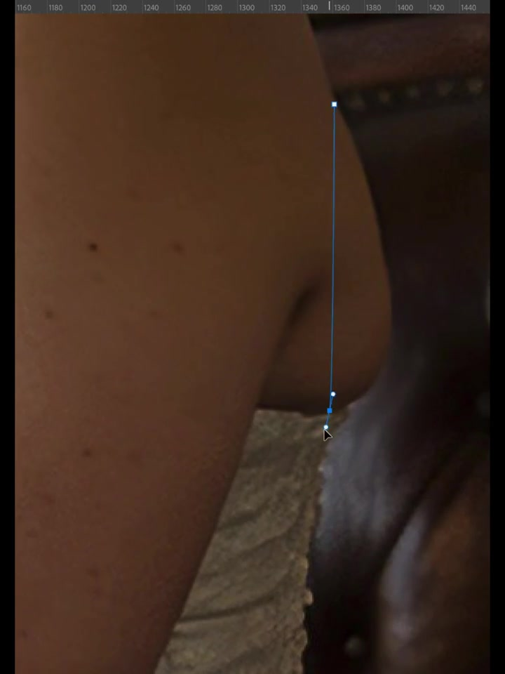
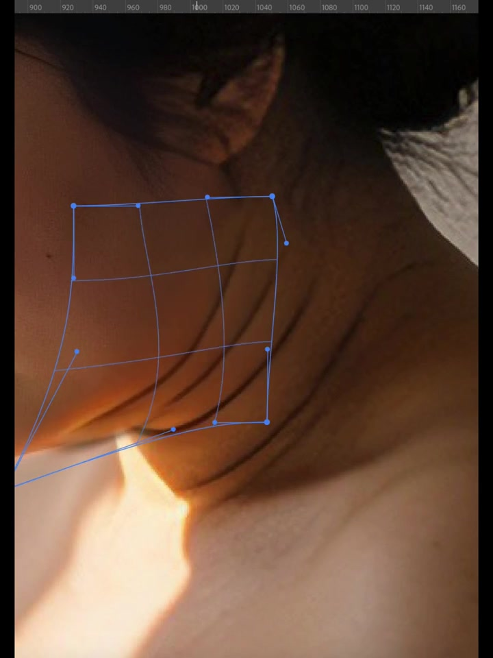
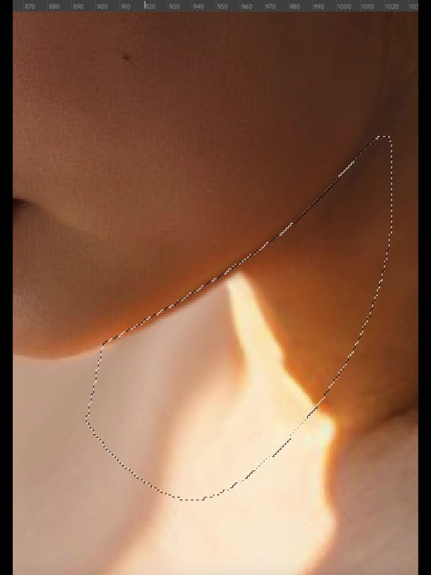
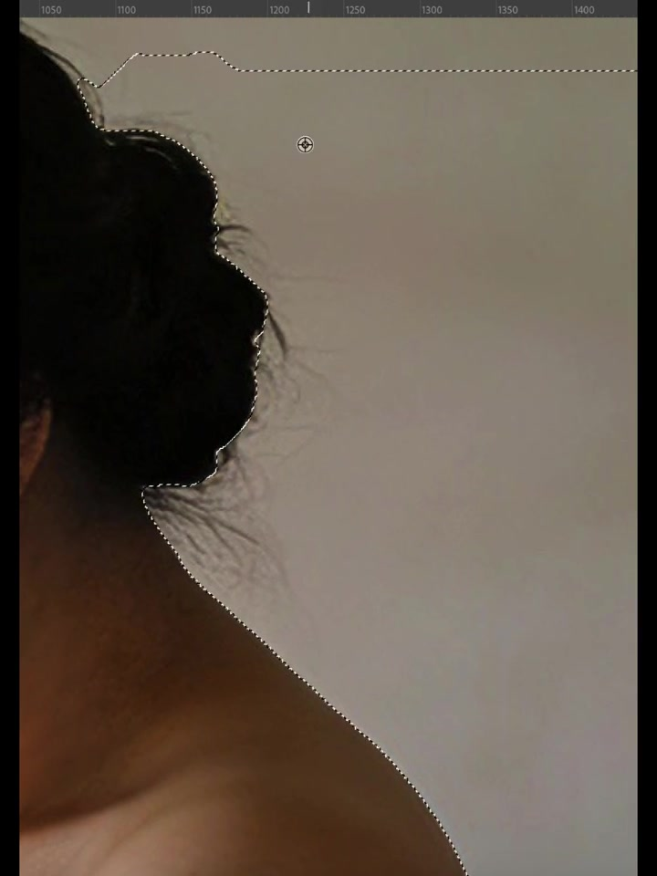
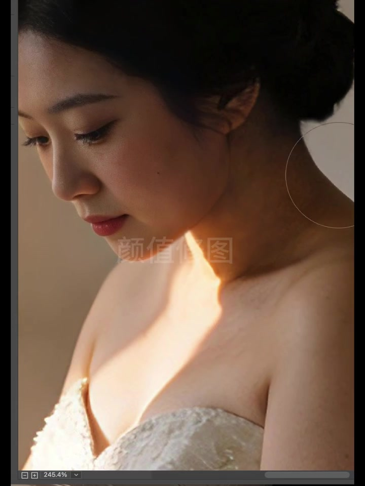
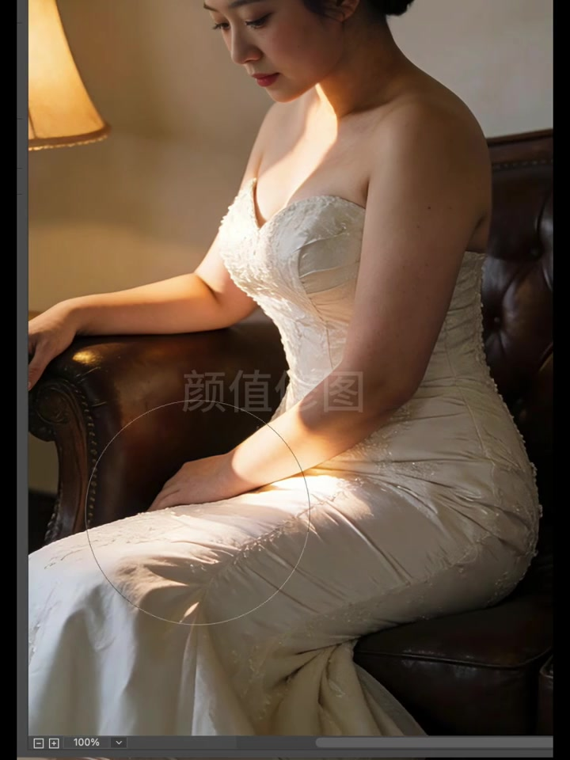
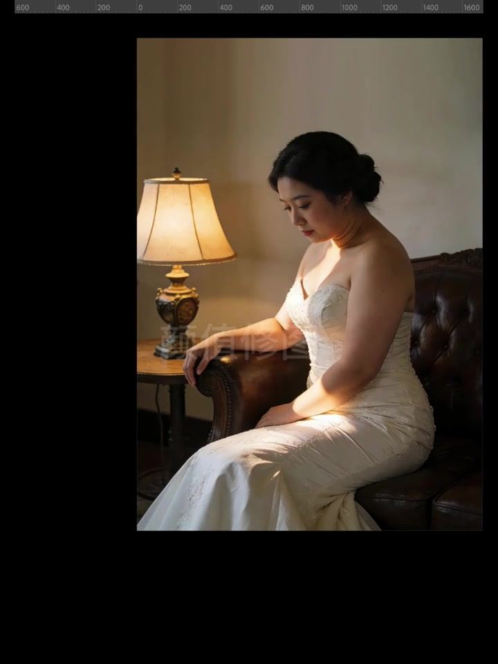
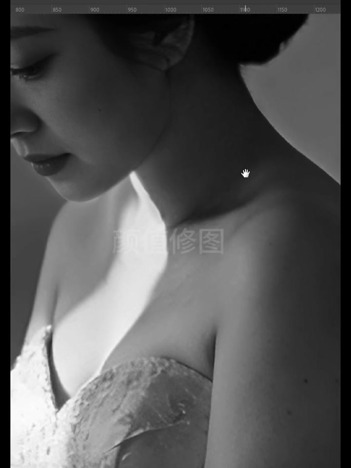

01
中文
放大检视皮肤折痕和痣点。
EN
Zoomed in on creases, moles, and edges.
表达提示crease（折痕）

Scene English · 修图 · 人像精修
Wedding Photo Retouch, Beauty Restored
🎧 语音讲解
Opening High-Zoom Inspection
情境开场高倍检视：皮肤折痕、痣点与深色椅面边界，钢笔光标停在轮廓线上。放大检视皮肤上的每一个小瑕疵。
放大检视皮肤折痕和痣点。
Zoomed in on creases, moles, and edges.
表达提示crease（折痕）
钢笔光标停在轮廓线上。
The pen cursor pauses on the contour line.
表达提示contour（轮廓）
crease（折痕
contour（轮廓

Liquify Over the Neck
情境液化网格覆盖颈侧：针对横纹做局部变形，而非全局磨皮。针对颈纹做局部液化，避免整个皮肤被磨平。
液化网格覆盖颈侧。
A liquify grid spreads over the neck.
表达提示liquify grid（液化网格）
局部变形而非全局磨皮。
Local warping, not global smoothing.
表达提示warp（变形）
liquify grid（液化网格
warp（变形

Side-Lit Working View
情境侧光人像工作视图：暖光勾勒下颌与颈前，蕾丝婚纱细节清晰。在侧光下检查轮廓和高光的处理。
暖光勾勒下颌与颈前。
Warm light traces the jaw and front neck.
表达提示trace（勾勒）
蕾丝婚纱细节清晰。
Lace wedding details stay sharp.
表达提示lace（蕾丝）
trace（勾勒
lace（蕾丝

Silhouette Mask
情境轮廓蒙版：选区沿头、颈、肩剪影行进，为后续换背景或局部处理做准备。沿人物轮廓建立蒙版，便于后续处理。
选区沿头颈肩剪影行进。
The selection follows the head-neck-shoulder outline.
表达提示silhouette（剪影）
为换背景做准备。
It preps a background swap.
表达提示swap（替换）
silhouette（剪影
swap（替换

High-Zoom Local Retouch
情境高倍局部润饰：笔刷落在颈侧阴影过渡带，界面显示约245%缩放。在245%缩放下精修阴影过渡。
笔刷处理颈侧阴影过渡。
The brush works the neck shadow transition.
表达提示transition（过渡）
界面显示约245%缩放。
The view shows roughly 245% zoom.
表达提示245% zoom（245%缩放）
transition（过渡
245% zoom（245%缩放

Full-Body Review
情境全身回看：100%视图下检查体态与服装，手臂旁有白色标注线。回到全身，检查体态与服装整体效果。
100%视图检查体态与服装。
At 100% view, checking posture and garment.
表达提示posture（体态）
手臂旁有标注线。
A white annotation line sits by the arm.
表达提示annotation（标注）
posture（体态
annotation（标注

Composition Check
情境构图检视：台灯、圆桌与沙发一并入画，确认暖光氛围与整体层次。检查整幅画面的光线氛围与层次。
台灯、圆桌与沙发一并入画。
The lamp, table, and sofa all frame in.
表达提示frame in（入画）
确认暖光氛围与层次。
Confirming the warm mood and layers.
表达提示layers（层次）
frame in（入画
layers（层次

Black-and-White Check
情境黑白检视：去掉色彩后复查颈肩光影过渡与皮肤干净度。去色检查光影过渡是否干净利落。
去色复查光影过渡。
Stripping color to review the light transitions.
表达提示strip color（去色）
检查皮肤干净度。
Checking how clean the skin looks.
表达提示cleanliness（干净度）
strip color（去色
cleanliness（干净度
说高倍检视
说局部液化
说轮廓蒙版
说黑白复查
局部处理更自然。
高倍缩放下精修。
先建立轮廓蒙版。
去色复查光影。
全身回看体态服装。